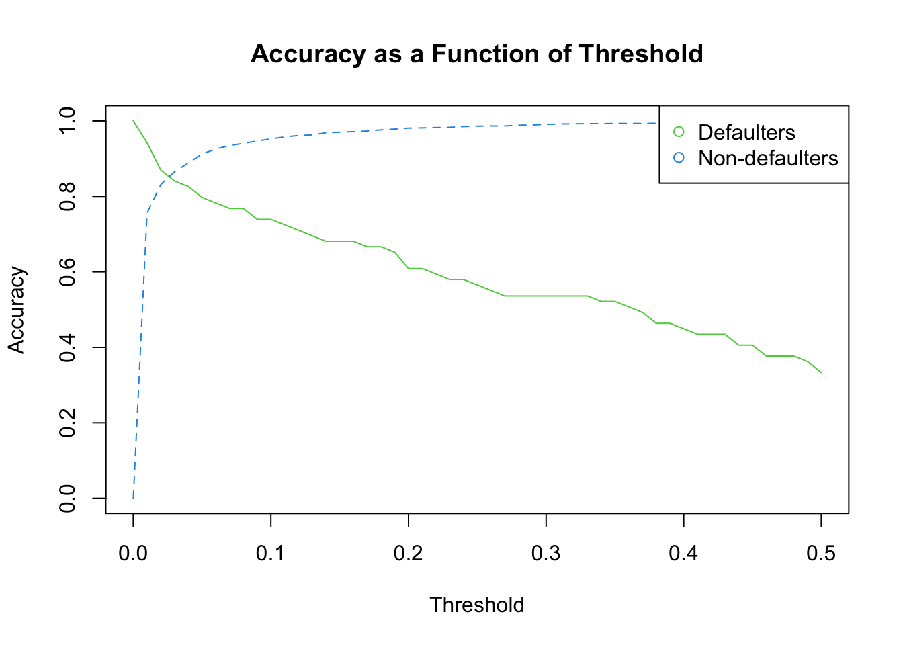

## Load the packages
library(ISLR)
library(FNN)Section 4.2 - Classification and Helpful Commands in R
The goal of this session is to learn how to implement three classification models: 1. A logistic model 2. LDA 3. QDA
Reminders
To run one line of code in RStudio, you can highlight the code you want to run and hit “Run” at the top of the script. Alternatively, on a mac, you can highlight the code to run and hit Command + Enter. Or on a PC, you can highlight the code to run and hit Ctrl + Enter. If you ever forget how a function works, you can type ? followed immediately (e.g. with no space) by the function name to get the help file
Let’s start by loading the necessary packages and data. We will use the “Default” dataset available from the ISLR package. This dataset contains information on credit card defaults, including a binary response variable “default” and three predictors: “student”, “balance”, and “income”. We will use this dataset to build and evaluate classification models.
Data preparation
Now extract the data and name it “default_data”
default_data <- DefaultLet’s get to know our data
summary(default_data) default student balance income
No :9667 No :7056 Min. : 0.0 Min. : 772
Yes: 333 Yes:2944 1st Qu.: 481.7 1st Qu.:21340
Median : 823.6 Median :34553
Mean : 835.4 Mean :33517
3rd Qu.:1166.3 3rd Qu.:43808
Max. :2654.3 Max. :73554 It looks like we have two categorical variables. We can convert them both to numeric
default_data$default <- as.numeric(default_data$default == "Yes")
default_data$student <- as.numeric(default_data$student == "Yes")Let’s again split our data into test and training data sets with a 20/80 split. We use set.seed() to ensure replicability.
set.seed(222)Then we can use the sample function to split the data (as before)
## First pick the test observations (20% of the data)
test_obs <- sample(seq(nrow(default_data)),
round(0.2 * nrow(default_data)))
## The training observations are the remaining observations
train_obs <- setdiff(seq(nrow(default_data)), test_obs)
## Use the indices now to extract the corresponding subsets of the data
test_data <- default_data[test_obs,]
train_data <- default_data[train_obs,]Logistic regression
Now, let’s say we are interested in using a logistic regression. For a base case, let’s try to predict default from the other available variables using logistic regression. To run logistic regression in R, use glm(), which requires three arguments: - 1st: Your formula (y ~ x1 + x2) - 2nd: Family = binomial tells it to use logistic regression - 3rd: You data, including both x and y columns.
We will train the model on the training data, make predictions for the test data using predict(), and measure performance with Accuracy.
logistic_default <- glm(default ~ student + balance + income,
family = binomial,
data = train_data)To view information about the logistic regression, including coefficients, use summary()
summary(logistic_default)
Call:
glm(formula = default ~ student + balance + income, family = binomial,
data = train_data)
Coefficients:
Estimate Std. Error z value Pr(>|z|)
(Intercept) -1.108e+01 5.654e-01 -19.588 <2e-16 ***
student -5.036e-01 2.638e-01 -1.909 0.0563 .
balance 5.739e-03 2.619e-04 21.916 <2e-16 ***
income 6.727e-06 9.312e-06 0.722 0.4701
---
Signif. codes: 0 '***' 0.001 '**' 0.01 '*' 0.05 '.' 0.1 ' ' 1
(Dispersion parameter for binomial family taken to be 1)
Null deviance: 2320.3 on 7999 degrees of freedom
Residual deviance: 1252.6 on 7996 degrees of freedom
AIC: 1260.6
Number of Fisher Scoring iterations: 8To predict outcomes on the test_data using logistic regression, use:
logistic_predict <-predict(logistic_default,
test_data,
type = "response")Let’s look at what we got from this prediction model. We will use the head() function, which prints the first few values of the object inside the parentheses. If you want to change the number of observations that are printed to 100, you can use head(object, n = 100)
head(logistic_predict) 4350 18 6678 4788 9481 9994
5.133197e-04 2.176129e-04 2.515555e-03 3.317590e-02 2.508148e-05 4.935658e-03 We see that the prediction outputs are probabilities, so in order to make predictions we have to decide on a decision rule. A common one is if the predicted probability is > 0.5, predict 1 otherwise 0. Let’s see how we would do using this rule. Because it’s a classification problem, accuracy is a good measure (% correct)
class_predictions <- as.numeric(logistic_predict > 0.5)
logistic_accuracy <- mean(class_predictions == test_data$default)
print(logistic_accuracy)[1] 0.9745The accuracy looks great! But, we might care more about different types of errors than overall error rate. For example, we may not want to give loans to people who will default even if this means denying loans to some people who wouldn’t default. We can measure error rate by true default status. Note that for defaulters, default = 1. Here, I pull out all the predictions for the true defaulters and see what fraction of those equal 1.
true_pos_accuracy <- mean(class_predictions[which(test_data$default == 1)] == 1)
print(true_pos_accuracy)[1] 0.3333333Like-wise for the non-defaulters, I see what fraction of those equal 0. This gives class-specific accuracy rates.
true_neg_accuracy <- mean(class_predictions[which(test_data$default == 0)] == 0)
print(true_neg_accuracy)[1] 0.9974107These values summarise what can also be seen in the following table. Where the columns correspond to the true values and the rows correspond to the predicted values.
table(class_predictions, test_data$default)
class_predictions 0 1
0 1926 46
1 5 23Suppose instead of the accuracy, you wanted to directly calculate the error rate. How would you do it? Hint, errors are ones where the prediction does not equal the true value. In R, we use != for “does not equal”
We can also calculate the error rate for the true defaulters and non-defaulters.
true_pos_error <- mean(class_predictions
[which(test_data$default == 1)] != 1)
print(true_pos_error)[1] 0.6666667true_neg_error <- mean(class_predictions
[which(test_data$default == 0)] != 0)
print(true_neg_error)[1] 0.002589332We see that we did a lot better on the true negatives than the true positives. Among all the people who will default, we only predicted about 1/3% of them would default. If we want to do a better job identifying these people, we can do this by lowering the default threshold from a predicted probability of 0.5 to something lower, say 0.2. Note, though, that lowering this threshold means increasing the number of default predictions for people who don’t default as well. Since we aren’t really sure how low we want to make this threshold, we can try for a bunch of threshold values and then see how the performance changes to pick the one that is best for our setting. This involves domain knowledge, such as the cost of default and the earnings on loans extended to people who repay, so there’s not one right answer, but we can more clearly see the tradeoffs by trying many values and plotting the error rates in each group as a function of the threshold.
To do this, we can use a loop to try a bunch of threshold values and then calculate the error rates for each threshold. We can then plot the error rates as a function of the threshold to see how the error rates change as we change the threshold.
## First, we need to specify the list of threshold values to assess
threshold_values <- seq(from = 0.00, to = 0.50, by = 0.01)Then we initialize a matrix of error rates. This matrix will have a number of rows corresponding to the length of the list of threshold values and 2 columns corresponding to the true positive and true negative accuracy for each value that we test
error_rates <- matrix(0, nrow = length(threshold_values), ncol = 2)Now we can start the loop. We initialize a tracker for the row index, then for each threshold value in our specified list of values, we update the tracker to reflect the row, generate the predicted classes using the specific threshold, calculate the true positive accuracy, calculate the true negative accuracy, and add the results to our matrix.
indx <- 0
for(threshold in threshold_values) {
## Update the tracker to reflect the row
indx <- indx + 1
## Then generate the predicted classes using the specific threshold
class_predictions <- as.numeric(logistic_predict > threshold)
## Then calculate the true positive accuracy
true_pos_accuracy <- mean(class_predictions[which(test_data$default == 1)] == 1)
## Then calculate the true negative accuracy
true_neg_accuracy <- mean(class_predictions[which(test_data$default == 0)] == 0)
## Now we can add the results to our matrix
error_rates[indx,] <- c(true_pos_accuracy, true_neg_accuracy)
}Let’s plot each of these as a function of the threshold
matplot(x = threshold_values,
y = error_rates,
type = "l",
col = 3:4,
xlab = "Threshold",
ylab = "Accuracy",
main = "Accuracy as a Function of Threshold")
legend("topright", legend = c("Defaulters", "Non-defaulters"),
col = 3:4, pch = 1)
LDAs and QDAs
We can also use other methods to predict default. For example, we can use linear discriminant analysis (LDA) and quadratic discriminant analysis (QDA). These methods are similar to logistic regression, but they make different assumptions about the data. LDA assumes that the data are normally distributed and that the variance is the same in each group. QDA assumes that the data are normally distributed, but it does not assume that the variance is the same in each group.
Note that we need to load the package MASS, because it contains the functions lda() and qda()
library(MASS)Now we can use the “lda” function to run the LDA model.
lda_model <- lda(default ~., data = train_data)We can then generate the predicted values
lda_pred <- predict(lda_model, test_data[,-1])And extract the predicted classes
class_pred_lda <- lda_pred$classFinally, we can calculate the error rate
error_lda <- mean(class_pred_lda !=
test_data$default)
print(error_lda)[1] 0.029To run QDA, we use the “qda” function. Otherwise, the code is the same as with “lda”
qda_model <- qda(default ~., data = train_data)
qda_pred <- predict(qda_model, test_data[,-1])
class_pred_qda <- qda_pred$class
error_qda <- mean(class_pred_qda !=
test_data$default)
print(error_qda)[1] 0.027Summary
In this tutorial, we learned how to use logistic regression, LDA, and QDA to predict default. We also learned how to calculate the error rates for each method. We found that logistic regression had the lowest error rate, but we also saw that the error rates for LDA and QDA were not much higher. This suggests that all three methods are useful for predicting default.